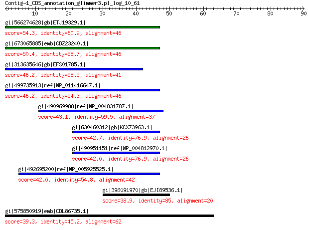

bitscore colors: <40, 40-50 , 50-80, 80-200, >200
 BLASTP 2.2.31+
Reference: Stephen F. Altschul, Thomas L. Madden, Alejandro A.
Schaffer, Jinghui Zhang, Zheng Zhang, Webb Miller, and David J.
Lipman (1997), "Gapped BLAST and PSI-BLAST: a new generation of
protein database search programs", Nucleic Acids Res. 25:3389-3402.
Reference for composition-based statistics: Alejandro A. Schaffer,
L. Aravind, Thomas L. Madden, Sergei Shavirin, John L. Spouge, Yuri
I. Wolf, Eugene V. Koonin, and Stephen F. Altschul (2001),
"Improving the accuracy of PSI-BLAST protein database searches with
composition-based statistics and other refinements", Nucleic Acids
Res. 29:2994-3005.
Database: All non-redundant GenBank CDS translations+PDB+SwissProt+PIR+PRF
excluding environmental samples from WGS projects
49,011,213 sequences; 17,563,301,199 total letters
Query= Contig-1_CDS_annotation_glimmer3.pl_log_10_61
Length=89
Score E
Sequences producing significant alignments: (Bits) Value
gi|566274628|gb|ETJ19329.1| hypothetical protein Q620_VSAC00462G... 54.3 7e-08
gi|673065885|emb|CDZ23240.1| hypothetical protein CCDG5_0091 [ [ 50.4 2e-06
gi|313635646|gb|EFS01785.1| putative cytoplasmic protein 46.2 6e-05
gi|499735913|ref|WP_011416647.1| hypothetical protein 46.2 6e-05
gi|490969988|ref|WP_004831787.1| hypothetical protein 43.1 8e-04
gi|630460312|gb|KCX73963.1| hypothetical protein J532_4599 42.7 0.001
gi|490951151|ref|WP_004812970.1| hypothetical protein 42.0 0.002
gi|492695200|ref|WP_005925525.1| hypothetical protein 42.0 0.002
gi|396091970|gb|EJI89536.1| hypothetical protein Y71_0884 38.9 0.021
gi|575850919|emb|CDL86735.1| conserved hypothetical protein 39.3 0.024
>gi|566274628|gb|ETJ19329.1| hypothetical protein Q620_VSAC00462G0001, partial [Veillonella
sp. DORA_A_3_16_22]
Length=48
Score = 54.3 bits (129), Expect = 7e-08, Method: Compositional matrix adjust.
Identities = 28/46 (61%), Positives = 33/46 (72%), Gaps = 0/46 (0%)
Query 1 VKSPGSTWEWHLRLVGWSLVEGGRIPCVAVKCVEMWRNTGGEGGPL 46
+K+PGST E H +L S E IPCVAVKCV++WRNT GEGG L
Sbjct 1 MKAPGSTGEGHWKLGDLSAEEESGIPCVAVKCVDIWRNTSGEGGSL 46
>gi|673065885|emb|CDZ23240.1| hypothetical protein CCDG5_0091 [ [[Clostridium] cellulosi]
gi|673066301|emb|CDZ23656.1| hypothetical protein CCDG5_0519 [ [[Clostridium] cellulosi]
gi|673066664|emb|CDZ24019.1| hypothetical protein CCDG5_0896 [ [[Clostridium] cellulosi]
gi|673067792|emb|CDZ25147.1| hypothetical protein CCDG5_2067 [ [[Clostridium] cellulosi]
Length=51
Score = 50.4 bits (119), Expect = 2e-06, Method: Compositional matrix adjust.
Identities = 27/46 (59%), Positives = 30/46 (65%), Gaps = 0/46 (0%)
Query 1 VKSPGSTWEWHLRLVGWSLVEGGRIPCVAVKCVEMWRNTGGEGGPL 46
VKS G T H +L S VE G IP VAVKCV++ RNT GEGG L
Sbjct 3 VKSLGLTQRLHSKLAILSEVEAGGIPGVAVKCVDIGRNTSGEGGLL 48
>gi|313635646|gb|EFS01785.1| putative cytoplasmic protein [Listeria seeligeri FSL S4-171]
Length=41
Score = 46.2 bits (108), Expect = 6e-05, Method: Compositional matrix adjust.
Identities = 24/41 (59%), Positives = 28/41 (68%), Gaps = 0/41 (0%)
Query 1 VKSPGSTWEWHLRLVGWSLVEGGRIPCVAVKCVEMWRNTGG 41
+K+PG T E H +L WS E IP VAVKCV+MWRNT G
Sbjct 1 MKAPGLTGEGHWKLEDWSAEEESGIPRVAVKCVDMWRNTSG 41
>gi|499735913|ref|WP_011416647.1| hypothetical protein [Syntrophus aciditrophicus]
gi|85858579|ref|YP_460781.1| cytoplasmic protein [Syntrophus aciditrophicus SB]
gi|85721670|gb|ABC76613.1| hypothetical cytosolic protein [Syntrophus aciditrophicus SB]
Length=49
Score = 46.2 bits (108), Expect = 6e-05, Method: Compositional matrix adjust.
Identities = 25/46 (54%), Positives = 29/46 (63%), Gaps = 0/46 (0%)
Query 1 VKSPGSTWEWHLRLVGWSLVEGGRIPCVAVKCVEMWRNTGGEGGPL 46
+KS G T E HL+L S EG IP V VK V++ RNTGGEG L
Sbjct 1 MKSLGLTQEVHLKLFSLSKEEGSGIPGVEVKFVDIRRNTGGEGDFL 46
>gi|490969988|ref|WP_004831787.1| hypothetical protein [Parvimonas micra]
gi|158447807|gb|EDP24802.1| hypothetical protein PEPMIC_00054 [Parvimonas micra ATCC 33270]
Length=46
Score = 43.1 bits (100), Expect = 8e-04, Method: Compositional matrix adjust.
Identities = 22/37 (59%), Positives = 25/37 (68%), Gaps = 0/37 (0%)
Query 11 HLRLVGWSLVEGGRIPCVAVKCVEMWRNTGGEGGPLD 47
HL+L S E IP VAVKCV++ RNTGGEG LD
Sbjct 8 HLKLEDLSEGEESGIPSVAVKCVDIRRNTGGEGDFLD 44
>gi|630460312|gb|KCX73963.1| hypothetical protein J532_4599, partial [Acinetobacter baumannii
940793]
Length=32
Score = 42.7 bits (99), Expect = 0.001, Method: Compositional matrix adjust.
Identities = 20/26 (77%), Positives = 21/26 (81%), Gaps = 0/26 (0%)
Query 21 EGGRIPCVAVKCVEMWRNTGGEGGPL 46
E GRIP VAVKCVE+WRNT GEG L
Sbjct 3 EDGRIPGVAVKCVEIWRNTDGEGSHL 28
>gi|490951151|ref|WP_004812970.1| hypothetical protein, partial [Acinetobacter schindleri]
gi|479969754|gb|ENV14127.1| hypothetical protein F965_00687, partial [Acinetobacter schindleri
NIPH 900]
Length=29
Score = 42.0 bits (97), Expect = 0.002, Method: Compositional matrix adjust.
Identities = 20/26 (77%), Positives = 21/26 (81%), Gaps = 0/26 (0%)
Query 21 EGGRIPCVAVKCVEMWRNTGGEGGPL 46
E GRIP VAVKCVE+WRNT GEG L
Sbjct 3 EDGRIPGVAVKCVEIWRNTDGEGSHL 28
>gi|492695200|ref|WP_005925525.1| hypothetical protein [Faecalibacterium prausnitzii]
gi|158442785|gb|EDP19790.1| hypothetical protein FAEPRAM212_02571 [Faecalibacterium prausnitzii
M21/2]
Length=46
Score = 42.0 bits (97), Expect = 0.002, Method: Compositional matrix adjust.
Identities = 23/42 (55%), Positives = 27/42 (64%), Gaps = 0/42 (0%)
Query 5 GSTWEWHLRLVGWSLVEGGRIPCVAVKCVEMWRNTGGEGGPL 46
GST E +L S E G IP VAV+CV++ RNT GEGG L
Sbjct 2 GSTHELLSKLFFLSSAEVGGIPGVAVECVDIGRNTSGEGGLL 43
>gi|396091970|gb|EJI89536.1| hypothetical protein Y71_0884, partial [Kosakonia radicincitans
DSM 16656]
Length=20
Score = 38.9 bits (89), Expect = 0.021, Method: Compositional matrix adjust.
Identities = 17/20 (85%), Positives = 19/20 (95%), Gaps = 0/20 (0%)
Query 30 VKCVEMWRNTGGEGGPLDED 49
+KCVE+WRNTGGEGG LDED
Sbjct 1 MKCVEIWRNTGGEGGLLDED 20
>gi|575850919|emb|CDL86735.1| conserved hypothetical protein [Xenorhabdus cabanillasii JM26]
Length=66
Score = 39.3 bits (90), Expect = 0.024, Method: Compositional matrix adjust.
Identities = 28/64 (44%), Positives = 36/64 (56%), Gaps = 3/64 (5%)
Query 1 VKSPGSTWEWHLRLVGWSLVEGGRIPCVAVKCVEMWRNTGGEGGPL--DEDWRSGAKAWG 58
+K+ G T E H + S E PCVAV+ V++W+NT GEGG L + R K W
Sbjct 1 MKAFGLTEEVHRKPGDLSAEEDSGTPCVAVERVDIWKNTSGEGGCLVCNVTLRL-RKQWV 59
Query 59 ANRI 62
ANRI
Sbjct 60 ANRI 63
Lambda K H a alpha
0.322 0.142 0.532 0.792 4.96
Gapped
Lambda K H a alpha sigma
0.267 0.0410 0.140 1.90 42.6 43.6
Effective search space used: 440149188960